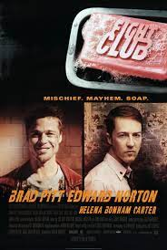
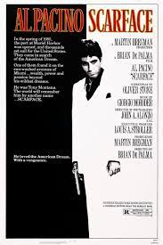

The lives of two mob hitmen, a boxer, a gangster and his wife, and a pair of diner bandits
intertwine in four tales of violence and redemption.

It is both a sequel and a prequel to the 1972 film The Godfather,
presenting parallel dramas: one picks up the story of Michael Corleone, the new Don of the Corleone family,
protecting the family business in the aftermath of an attempt on his life; the prequel covers the journey of his father,
Vito Corleone, from his Sicilian childhood to the founding of his family enterprise in New York City. 
Norton plays the unnamed narrator, who is discontented with his white-collar job.
He forms a "fight club" with soap salesman Tyler Durden, and becomes embroiled
in a relationship with a mysterious woman, Marla Singer.

In 1954, U.S. Marshal Edward "Teddy" Daniels and his new partner Chuck Aule travel to Ashecliffe Hospital
for the criminally insane on Shutter Island, Boston Harbor to investigate the disappearance of Rachel Solando,
a patient of the hospital who had previously drowned her three children. 
In 1980 Miami, a determined Cuban immigrant takes over a drug cartel and succumbs to greed.
After getting a green card in exchange for assassinating a Cuban government official, Tony Montana stakes a claim on the drug trade in Miami.
go back to homepage